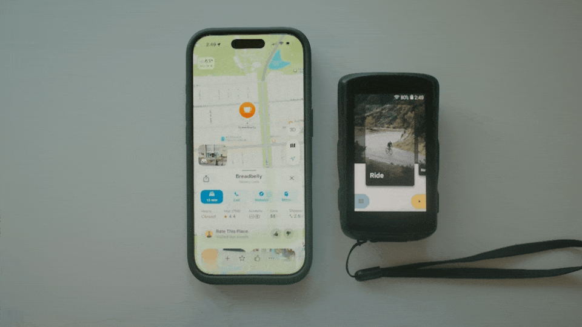

The story behind SendPin

Often when I go on a ride, especially somewhere I don't know well, I look up a café or somewhere to eat on my phone. Even when I have a set route, I usually don't have that destination picked in advance; I just find a spot as I'm rolling through a town.
Which leaves me riding one-handed with my phone out, or trying to memorise the route and inevitably pulling my phone back out to check.
Meanwhile I have a bike computer I specifically bought for navigation. It's great, but its search experience will never match what I get on my phone.
So what I wanted was simple: look up a place on my phone, send it to my bike computer, and let the Karoo take it from there.
To be clear, this is already a solved problem on the Karoo 3, Garmin and Wahoo, via their companion apps. Just not on the Karoo 2.
Why I built it
I thought it would be a fun project, given how good the AI tooling has got, and because doing it over Bluetooth Low Energy seemed like an interesting challenge.
I should caveat all of this: I'm not a software engineer. I work in tech, but I was focused far more on what I wanted to solve than on how to solve it. At the end of the day, all that's happening is an iOS app sending a message over Bluetooth — much like your power meter does — carrying a latitude and longitude, and your Karoo reading it.
Given how niche this is, how much more I add to it is TBD. As of right now, it simply solves what I originally intended. If you have ideas or feedback, I'd love to hear them — leave a note ↗.